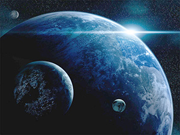

| Cette page est actuellement en cours de construction. Son auteur travaille à l'améliorer. |
| Essara | |
|---|---|
 | |
| Statut | Planète mère et capitale de l'Empire Spatial d'Essara. Son dirigeant est Neil Jors |
| Coordonnées | 3.4.9.5.4 |
| Surface émergée | 45% |
| Capitale: | Omégara |
| Cycle annuel | une année Essarane |
| Cycle journalier | 24 unités de temps Essaranes (heures) |
| Population | environ 10 milliards d'habitants |
| Lune(s) | 2 naturelles |
| Espèces répertoriées | 40% d'Humains, 15% d'Adosiens, 30% de Myhosiens et environ 15% de Thenat. Possible présence d'autres formes de vie intelligentes non-répertoriées sur la planète. |
| Langue officielle | Essaran, Langue Galactique, Transmission mentale |

Description :
Cette planète de taille moyenne d'un diamètre à l'équateur de 15000 kilomètres, est située dans le système 9 du Secteur quatre d'Eternité.
Il s'agit de la planète d'accueil des réfugiés du Tetra. Ces réfugiés, anciens esclaves pour la plupart, ont décidés de rebâtir une civilisation sur cette planète, qu'ils nommèrent Essara. En 250 ans, ils réussirent l'exploit d'explorer la majeure partie de la surface émergée de la planète. Toutefois, celle-ci recèle encore bien des mystères, tant sur terre que sous l'eau.
LES CONTINENTS:
Les terres émergées sont regroupées en 3 continents:
-L'Austrasie, qui est le continent le plus peuplé, et donc le plus évolué technologiquement. On y trouve Omégara, située dans l'estuaire du fleuve Amerzone, qui sillonne le continent, presque de long en large. C'est le berceau de la civilisation Essarane.
-L'Ysdek, qui est un continent relativement sauvage. Il est situé entre l'équateur et le pôle sud de la planète, ce qui en fait un continent d'un côté recouvert d'une épaisse calotte glacière, de l'autre parsemé de savanes et de montagnes. Il n'est que peu peuplé, si on fait abstraction des diverses mines, puits d'extractions de matières premières et autre zone de production de denrées alimentaires.
-L'Efrath est un continent tropical, composé d'une gigantesque forêt vierge. La présence Essarane y est un peu plus importante qu'en Ysdek. On y compte plusieurs grande Cités, bâties dans un souci de préservation de la nature environnante. Peu de bâtiments d'extraction de ressources y sont installés. Par contre, les laboratoires d'études tropicales y fleurissent.
LES OCÉANS ET MERS:
Les océans représente approximativement 55% de la surface totale de la planète, ce qui fait de l'eau l'élément principal d'Essara. On fait état de la présence de plusieurs Cités sous-marine, dont la plus célèbre est sans conteste Umerade. Toutefois, leurs localisations précise est une information connue des Essarans seuls.
LES LUNES:
Essara dispose de deux satellites naturels.
-Le premier, nommé Odessa, possède une atmosphère et est habité. Sa gravité plus faible que sur Essara lui confère un atout de choix dans l'installation de chantiers spatiaux comme Alstem ou Technorbita. Les deux compagnies sont donc confortablement implantées sur cette lune.
-Le deuxième, Idalcor est de loin moins attractif: dépourvu d'atmosphère et couvert de cratères, il ne sert guère plus que de dépôt pour les matériaux dangereux issus de l'industrie Essarane.